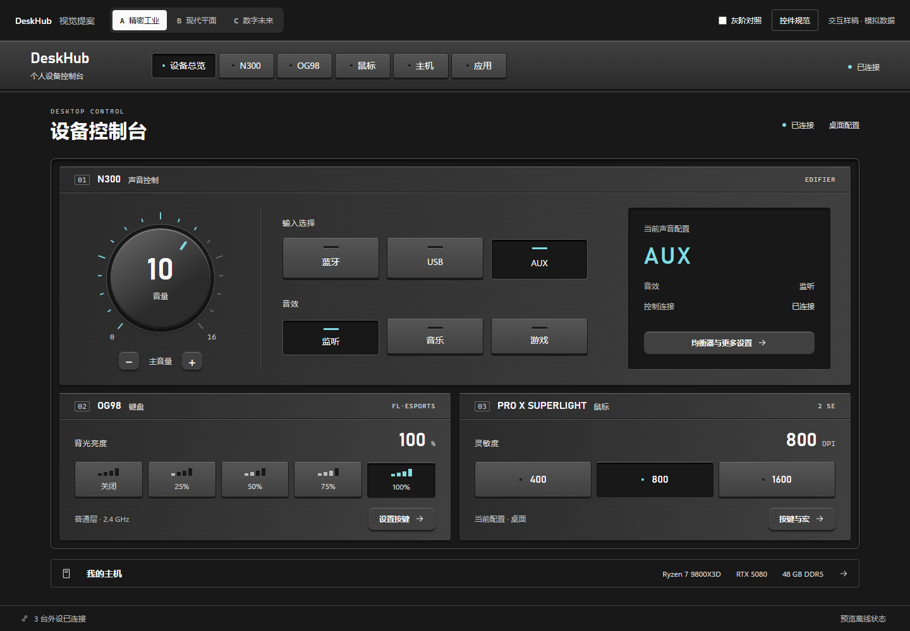
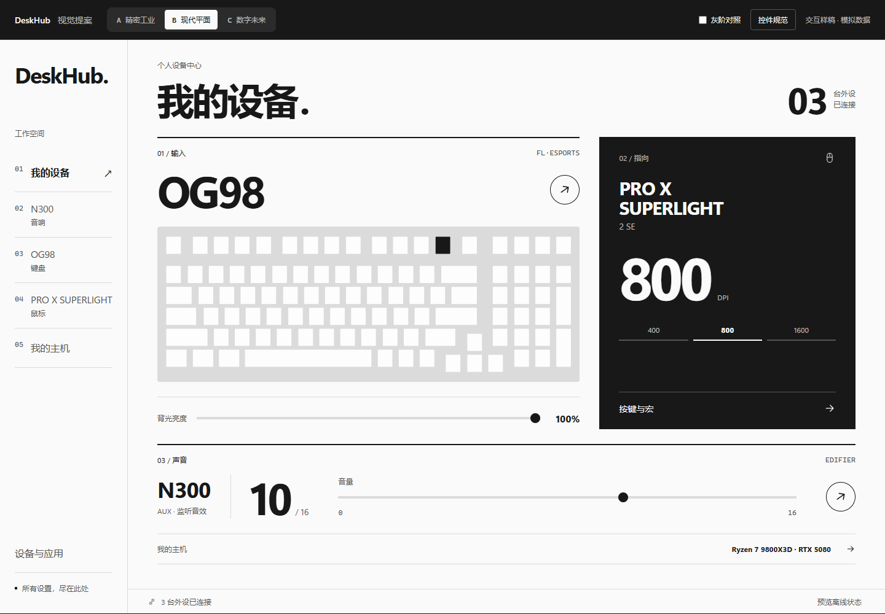
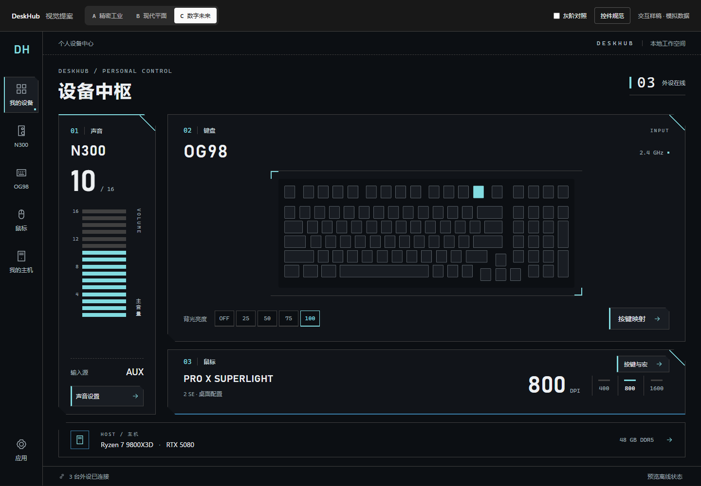

精密工业
浅实体边缘 / 仪表读数 / 按压反馈

进入交互样稿 ↗控制面板般的秩序与触感。浅厚度按钮、凹入读数、稳定刻度，操作时有短促的压下反馈。
按钮小圆角、浅斜边、上亮下暗
选中键面亮起，轮廓与原有形状一致
排版规整标签与等宽读数
相同设备与任务，独立设计构图、控件和操作区域。

进入交互样稿 ↗控制面板般的秩序与触感。浅厚度按钮、凹入读数、稳定刻度，操作时有短促的压下反馈。

进入交互样稿 ↗用字体和纯粹几何构成界面。强调数值、黑白关系与准确的对齐，让操作对象清晰地成为视觉中心。

进入交互样稿 ↗边界参与表达状态。切角、局部标记、分段轨道与有序节点，构成清楚而克制的电子感。